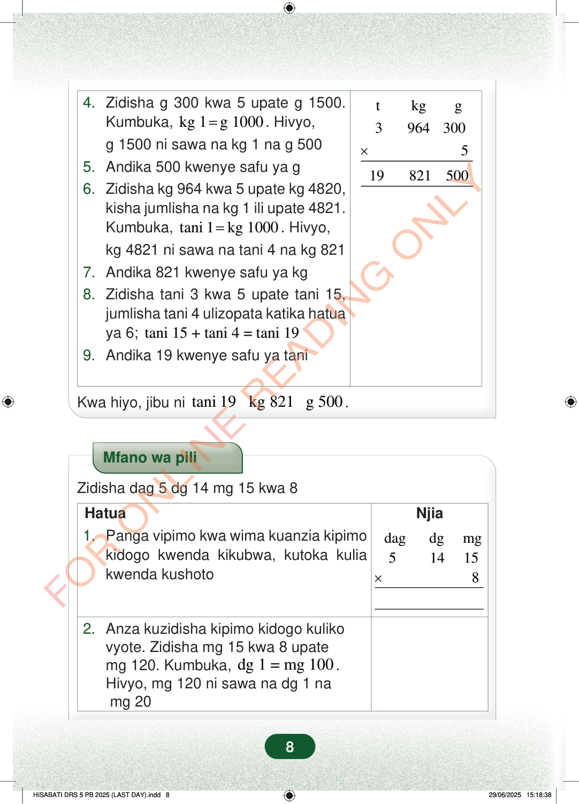

×tkgg39643005198215004.Zidisha g 300 kwa 5 upate g 1500.Kumbuka,kg 1g 1000=. Hivyo,g 1500 ni sawa na kg 1 na g 5005.Andika 500 kwenye safu ya g6.Zidisha kg 964 kwa 5 upate kg 4820,kisha jumlisha na kg 1 ili upate 4821.Kumbuka,tani 1kg 1000=. Hivyo,kg 4821 ni sawa na tani 4 na kg 8217.Andika 821 kwenye safu ya kg8.Zidisha tani 3 kwa 5 upate tani 15,jumlisha tani 4 ulizopata katika hatuaya 6;tani 15 + tani 4 = tani 199.Andika 19 kwenye safu ya taniKwa hiyo, jibu nitani 19 kg 821 g 500.Mfano wa piliZidisha dag 5 dg 14 mg 15 kwa 8NjiaHatua1.Panga vipimo kwa wima kuanzia kipimokidogo kwenda kikubwa, kutoka kuliakwenda kushotodagdgmg514158×2.Anza kuzidisha kipimo kidogo kulikovyote. Zidisha mg 15 kwa 8 upatemg 120. Kumbuka,dg 1 = mg 100.Hivyo, mg 120 ni sawa na dg 1 namg 208
×
t kg g 3 964 300 5
19 821 500
4. Zidisha g 300 kwa 5 upate g 1500. Kumbuka, kg 1 g 1000 = . Hivyo, g 1500 ni sawa na kg 1 na g 500 5. Andika 500 kwenye safu ya g 6. Zidisha kg 964 kwa 5 upate kg 4820, kisha jumlisha na kg 1 ili upate 4821. Kumbuka, tani 1 kg 1000 = . Hivyo, kg 4821 ni sawa na tani 4 na kg 821 7. Andika 821 kwenye safu ya kg 8. Zidisha tani 3 kwa 5 upate tani 15, jumlisha tani 4 ulizopata katika hatua ya 6; tani 15 + tani 4 = tani 19 9. Andika 19 kwenye safu ya tani
Kwa hiyo, jibu ni tani 19 kg 821 g 500 .
Mfano wa pili
Zidisha dag 5 dg 14 mg 15 kwa 8
Njia
Hatua 1. Panga vipimo kwa wima kuanzia kipimo kidogo kwenda kikubwa, kutoka kulia kwenda kushoto
dag dg mg 5 14 15 8 ×
2. Anza kuzidisha kipimo kidogo kuliko vyote. Zidisha mg 15 kwa 8 upate mg 120. Kumbuka, dg 1 = mg 100 . Hivyo, mg 120 ni sawa na dg 1 na mg 20
8
Hatua za kuzidisha tani 3, kilo 964 na gramu 300 kwa 5. Jibu linaonyeshwa kuwa tani 19, kilo 821 na gramu 500.Kwa hiyo, jibu ni tani 19 kg 821 g 500.Mfano wa pili wa kuzidisha dag 5, dg 14 na mg 15 kwa 8. Jedwali linaonyesha hatua za kuanza na mg 15 kuzidishwa kwa 8 kupata mg 120, ambayo ni dg 1 na mg 20.